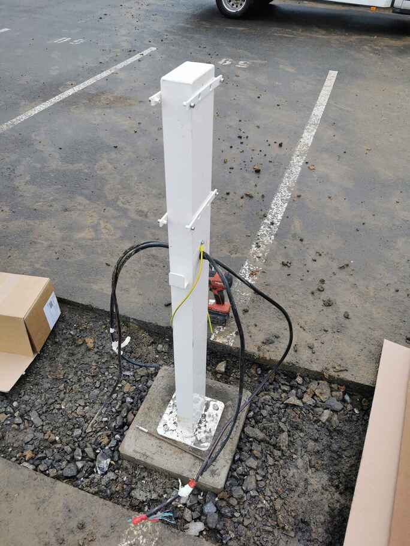
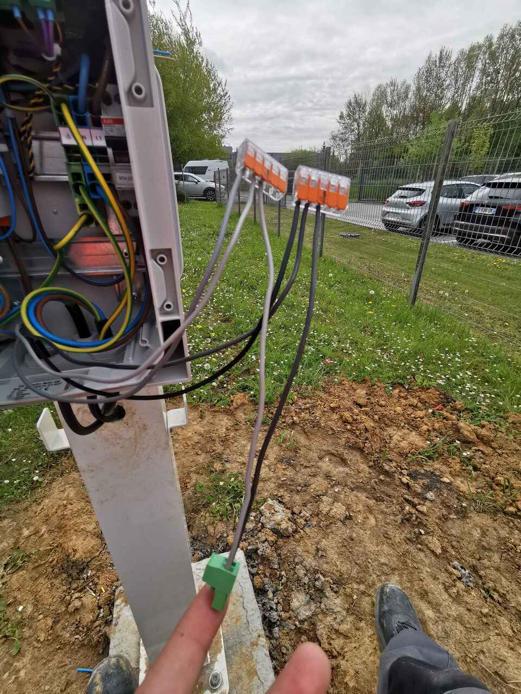
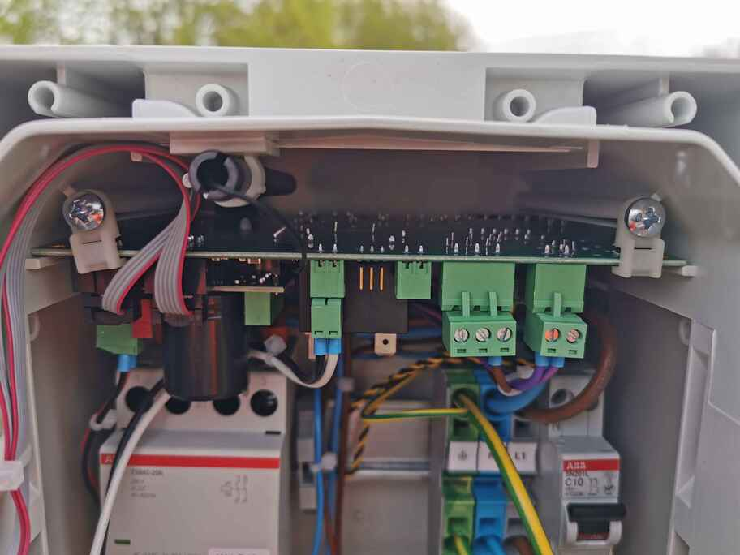
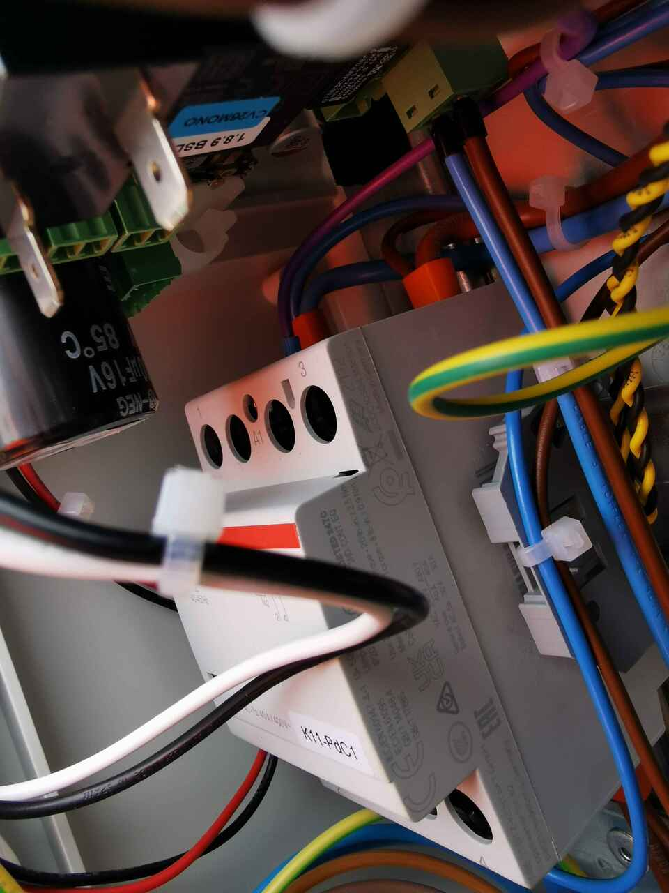
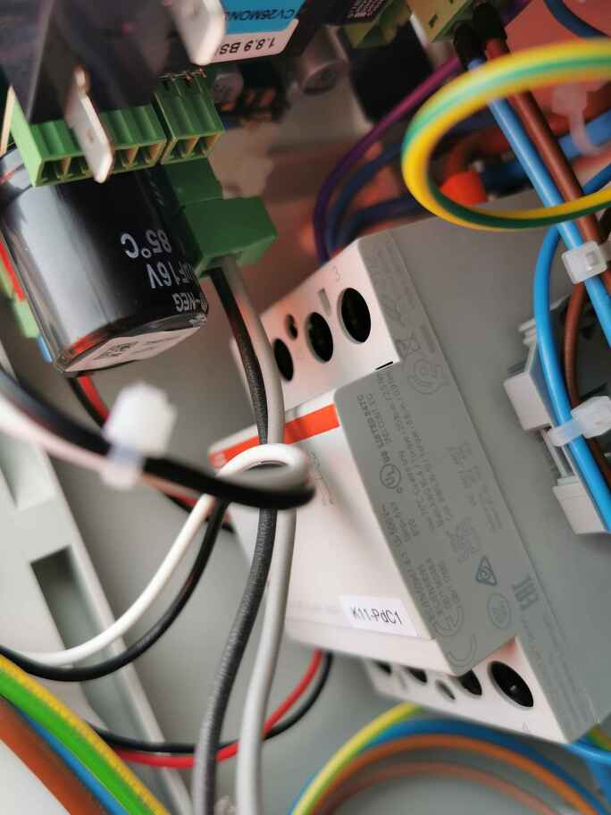
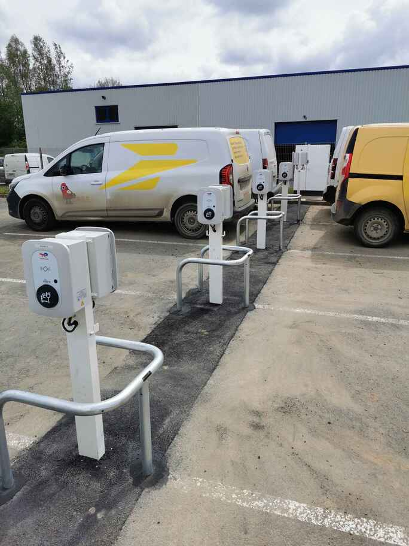
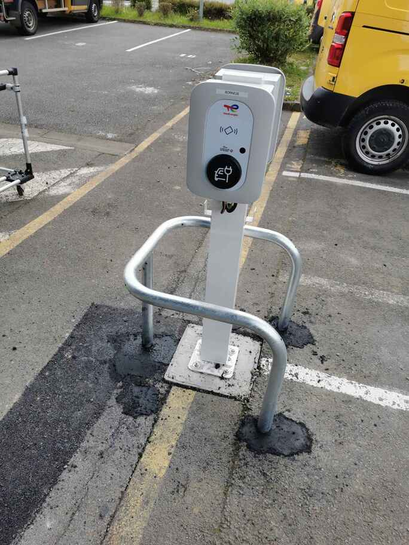
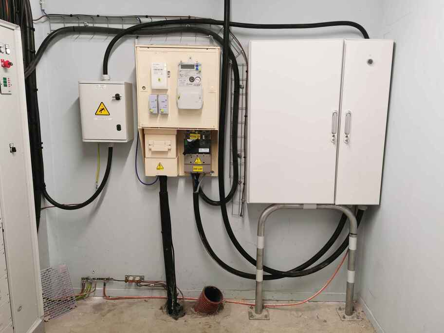
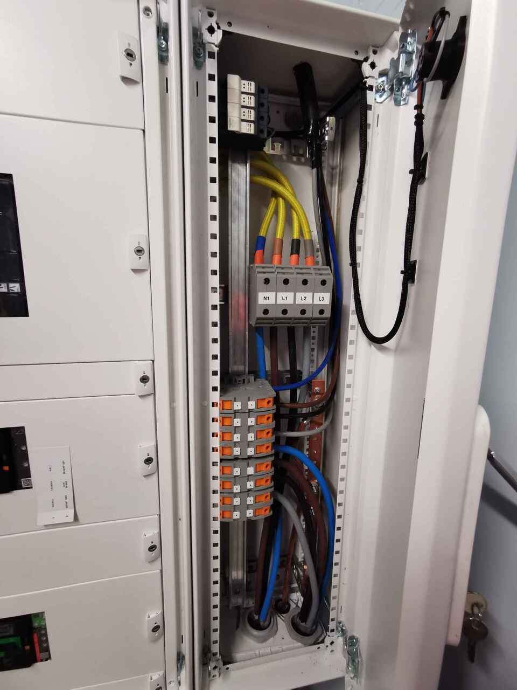
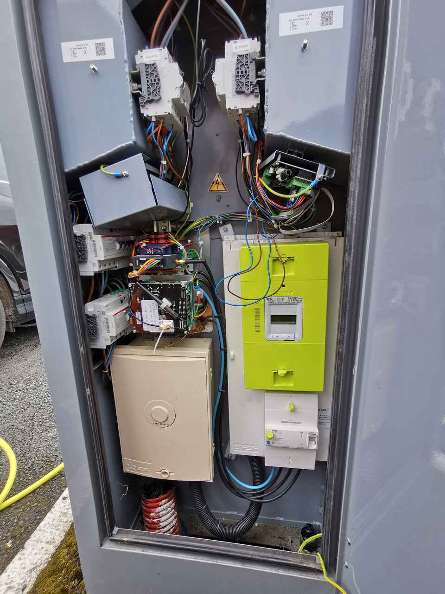

Stage chez Sogetrel
Chantier du centre de tri La Poste à Maubeuge
Dans le cadre de ce projet, j’ai participé à l’installation de 24 bornes de recharge sur le site du centre de tri de La Poste à Maubeuge. Mon travail a couvert plusieurs étapes clés :
Tirage des câbles : passage des câbles d’alimentation et de communication, en utilisant un jonc de tirage pour acheminer les câbles à travers les fourreaux.
Montage des bornes : fixation des pieds sur les dalles, installation des bornes et câblage selon le schéma défini.
Alimentation principale : assistance au tirage du câble entre le tableau de distribution extérieur et le TGBT, avec mise en place d’un chemin de câble.
Branchements électriques : participation aux connexions finales et mise en service du système.
Problèmes rencontrés et solutions apportées
Lors du chantier, plusieurs défis ont été surmontés, notamment le nivellement des dalles de béton, le passage difficile du câble d’alimentation dû à un fourreau mal positionné, ainsi qu’un problème de déclenchement du disjoncteur principal causé par un câble de communication défectueux. En collaboration avec l’équipe, j’ai contribué à identifier et corriger ces problèmes, garantissant ainsi la conformité et la fiabilité de l’installation.
Résultats
La mise en service a été validée avec succès par un superviseur de Total Énergies, qui a testé chaque borne et vérifié les dispositifs de sécurité. L’ensemble des installations a été approuvé et livré au client dans les délais, avec un haut niveau de satisfaction.

- 


- 

- 
- 
- 


- 
- 


- 
- 
Chantier du centre de tri La Poste à St Laurent Blangy
Pendant ce chantier, ma mission principale était d’aider mes collègues à faire passer le câble d’alimentation de la borne à travers le chemin de câble déjà existant jusqu’au TGBT (Tableau Général Basse Tension). Cette tâche nécessitait une coordination précise pour s’assurer que le câble était correctement installé sans endommager les autres installations existantes.
Installation du chemin de câble extérieur: aide à la fixation sur le muret où la borne était installée.
Câblage de la borne : connexion des 3 phases et de la terre conformément aux normes de sécurité.
Passage du câble dans le chemin de câble existant : acheminement du câble d’alimentation jusqu’au TGBT en utilisant l’infrastructure déjà en place.
Problèmes rencontrés et solutions apportées
Une partie du travail a consisté à localiser la continuité d’un fourreau afin de déterminer son parcours. Cette tâche s’est révélée complexe car le fourreau ne menait pas directement au TGBT, mais au local informatique derrière la baie informatique.
Les intempéries ont également rendu certaines opérations plus difficiles, en particulier le câblage de la borne. Malgré ces défis, toutes les étapes ont été complétées avec succès.
Résultats
Après avoir terminé le câblage, j’ai procédé à la mise en service de la borne, qui a fonctionné parfaitement dès le premier essai. Une réception client a ensuite été organisée par le conducteur de travaux pour valider l’installation. Bien que je n’aie pas pu y assister, les retours ont confirmé la satisfaction du client et la conformité des travaux réalisés.


Opération de maintenance sur les bornes de Toufflers et de Willems
Les bornes IRVE de Willems et de Toufflers, gérées par TotalEnergies, présentaient des dysfonctionnements nécessitant une maintenance.
Inspection de la première borne : constatation de l’allumage des LED de la carte RFID, test de tension avec la VAT et diagnostic d’une carte de communication défectueuse.
Inspection de la deuxième borne : observation d’un disjoncteur HS et d’une carte de communication non fonctionnelle après vérification des tensions.
Proposition de solution : commande d’un nouveau disjoncteur et de deux cartes de communication pour remplacement.
Problèmes rencontrés et solutions apportées
Le principal problème rencontré était l’indisponibilité immédiate des pièces de rechange, empêchant une réparation sur place. La commande des composants nécessaires a été effectuée pour une intervention ultérieure.
Résultats
Bien que les diagnostics effectués semblent corrects, je n’ai pas eu de confirmation quant à la suite des réparations et au rétablissement du service des bornes.

- 